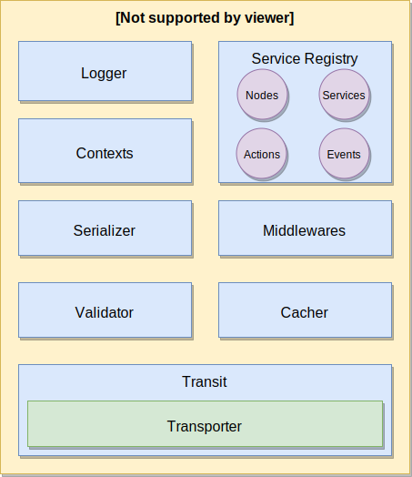

The ServiceBroker is the main component of Moleculer. It handles services, calls actions, emits events and communicates with remote nodes.
You must create a ServiceBroker instance for every node.

Create broker
Create broker with default settings:const { ServiceBroker } = require("moleculer");
const broker = new ServiceBroker();
Create broker with custom settings:const { ServiceBroker } = require("moleculer");
const broker = new ServiceBroker({
logLevel: "info"
});
Create broker with transporter to communicate with remote nodes:const { ServiceBroker } = require("moleculer");
const broker = new ServiceBroker({
nodeID: "node-1",
transporter: "nats://localhost:4222",
logLevel: "debug",
requestTimeout: 5 * 1000,
requestRetry: 3
});
Broker options
List of all available broker options:
| Name | Type | Default | Description |
|---|---|---|---|
namespace |
String |
"" |
Namespace of nodes to segment your nodes on the same network. |
nodeID |
String |
hostname + PID | Unique node identifier. Must be unique in a namespace. |
logger |
Boolean or Object or Function |
console |
Logger class. By default, it prints message to the console. External logger can be used, e.g. winston or pino. Read more. |
logLevel |
String |
info |
Log level for built-in console logger (trace, debug, info, warn, error, fatal). |
logFormatter |
String or Function |
"default" |
Log formatter for built-in console logger. Values: default, simple, short. It can be also a Function. |
logObjectPrinter |
Function |
null |
Custom object & array printer for built-in console logger. |
transporter |
String or Object or Transporter |
null |
Transporter settings. Read more. |
requestTimeout |
Number |
0 |
Number of milliseconds to wait before reject a request with a RequestTimeout error. Disabled: 0 |
retryPolicy |
Object |
Retry policy settings. Read more | |
maxCallLevel |
Number |
0 |
Limit of calling level. If it reaches the limit, broker will throw an MaxCallLevelError error. (Infinite loop protection) |
heartbeatInterval |
Number |
5 |
Number of seconds to send heartbeat packet to other nodes. |
heartbeatTimeout |
Number |
15 |
Number of seconds to wait before setting node to unavailable status. |
tracking |
Object |
Tracking requests and waiting for running requests before shutdowning. Read more | |
disableBalancer |
Boolean |
false |
Disable built-in request & emit balancer. Transporter must support it, as well. |
registry |
Object |
Settings of Service Registry | |
circuitBreaker |
Object |
Settings of Circuit Breaker | |
bulkhead |
Object |
Settings of bulkhead | |
transit.maxQueueSize |
Number |
50000 |
A protection against inordinate memory usages when there are too many outgoing requests. If there are more than stated outgoing live requests, the new requests will be rejected with QueueIsFullError error. |
transit.disableReconnect |
Boolean |
false |
Disables the reconnection logic while starting a broker |
transit.packetLogFilter |
Array |
empty |
Filters out the packets in debug logs |
cacher |
String or Object or Cacher |
null |
Cacher settings. Read more |
serializer |
String or Serializer |
JSONSerializer |
Instance of serializer. Read more |
skipProcessEventRegistration |
Boolean |
false |
Skip the default graceful shutdown event handlers. In this case you have to register them manually. |
validation |
Boolean |
true |
Enable parameters validation. |
validator |
Validator |
null |
Custom Validator class for validation. |
metrics |
Boolean |
false |
Enable metrics function. |
metricsRate |
Number |
1 |
Rate of metrics calls. 1 means to measure every request. |
internalServices |
Boolean |
true |
Register internal services. |
internalMiddlewares |
Boolean |
true |
Register internal middlewares. |
hotReload |
Boolean |
false |
Watch the loaded services and hot reload if they changed. Read more. |
middlewares |
Array<Function> |
null |
Register middlewares. Useful when you use Moleculer Runner. |
replCommands |
Array<Object> |
null |
Register custom REPL commands. |
created |
Function |
null |
Fired when the broker created. Useful when you use Moleculer Runner. |
started |
Function |
null |
Fired when the broker started. Useful when you use Moleculer Runner. |
stopped |
Function |
null |
Fired when the broker stopped. Useful when you use Moleculer Runner. |
ServiceFactory |
ServiceClass |
null |
Custom Service class. If not null, broker will use it when creating services. |
ContextFactory |
ContextClass |
null |
Custom Context class. If not null, broker will use it when creating contexts. |
Full options object
{ |
Moleculer runnerYou don’t need to create manually ServiceBroker in your project. Use the Moleculer Runner to create and execute a broker and load services. Read more about Moleculer Runner.
Ping
To ping remote nodes, use broker.ping method. You can ping a node, or all available nodes. It returns a Promise which contains the received ping informations (latency, time difference). A timeout value can be defined.
Ping a node with 1 second timeout
broker.ping("node-123", 1000).then(res => broker.logger.info(res)); |
Output{
nodeID: 'node-123',
elapsedTime: 16,
timeDiff: -3
}
The
timeDiffvalue is the difference of the system clock between these two nodes.
Ping multiple nodes
broker.ping(["node-100", "node-102"]).then(res => broker.logger.info(res)); |
Output{
"node-100": {
nodeID: 'node-100',
elapsedTime: 10,
timeDiff: -2
},
"node-102": {
nodeID: 'node-102',
elapsedTime: 250,
timeDiff: 850
}
}
Ping all available nodes
broker.ping().then(res => broker.logger.info(res)); |
Output{
"node-100": {
nodeID: 'node-100',
elapsedTime: 10,
timeDiff: -2
} ,
"node-101": {
nodeID: 'node-101',
elapsedTime: 18,
timeDiff: 32
},
"node-102": {
nodeID: 'node-102',
elapsedTime: 250,
timeDiff: 850
}
}
Properties
| Name | Type | Description |
|---|---|---|
broker.nodeID |
String |
Node ID. |
broker.Promise |
Promise |
Bluebird Promise class. |
broker.namespace |
String |
Namespace. |
broker.logger |
Logger |
Logger class of ServiceBroker. |
broker.cacher |
String |
Request ID. If you make nested-calls, it will be the same ID. |
broker.serializer |
String |
Parent context ID (in nested-calls). |
broker.validator |
Any |
Request params. Second argument from broker.call. |
broker.options |
Object |
Broker options. |
Methods
| Name | Response | Description |
|---|---|---|
broker.start() |
Promise |
Start broker. |
broker.stop() |
Promise |
Stop broker. |
broker.repl() |
- | Start REPL mode. |
broker.getLogger(module, props) |
Logger |
Get a child logger. |
broker.fatal(message, err, needExit) |
- | Throw an error and exit the process. |
broker.loadServices(folder, fileMask) |
Number |
Load services from a folder. |
broker.loadService(filePath) |
Service |
Load a service from file. |
broker.createService(schema, schemaMods) |
Service |
Create a service from schema. |
broker.destroyService(service) |
Promise |
Destroy a loaded local service. |
broker.getLocalService(name, version) |
Service |
Get a local service instance by name & version. |
broker.waitForServices(serviceNames, timeout, interval) |
Promise |
Wait for services. |
broker.call(actionName, params, opts) |
Promise |
Call a service. |
broker.mcall(def) |
Promise |
Multiple service calling. |
broker.emit(eventName, payload, groups) |
- | Emit a balanced event. |
broker.broadcast(eventName, payload, groups) |
- | Broadcast an event. |
broker.broadcastLocal(eventName, payload, groups) |
- | Broadcast an event to local services. |
broker.ping(nodeID, timeout) |
Promise |
Ping remote nodes. |